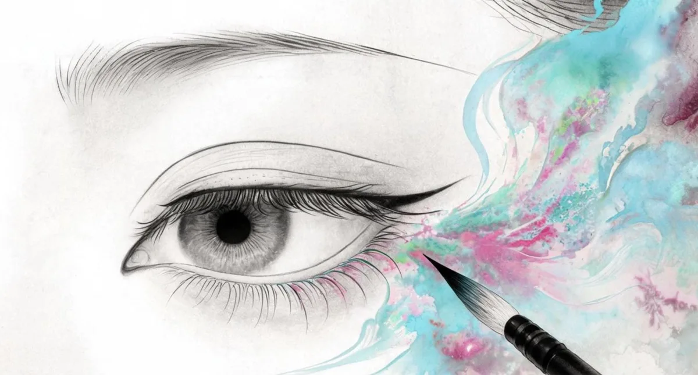

AI Film / PROJECT 10
眼中山河 / Eyes of Mountains
《眼中山河》是一支63秒的AI品牌广告片，为2026上海国际AIGC创新大赛参赛作品。
- ROLE
- 概念、AIGC 影像与视觉叙事
- TIME
- 2026
- TOOLS
- AIGC 图片与视频、剪辑；详细工具未记录
- TYPE
- AI film
- STATUS
- Completed film / External video

01 / ONE-LINE CONCEPT
One-line concept
《眼中山河》是一支63秒的AI品牌广告片，为2026上海国际AIGC创新大赛参赛作品。全程AI生成图片与视频，真人配音。灵感源自宋代五大名窑——汝、官、哥、钧、定的釉色。以宋代釉色为色卡，从天然矿物和植物中寻找相同颜色——石青、花青、朱砂、蛤粉——研磨成粉，做成眼影。色彩从盘中蘸取，化为山河，最终又回到盘中。
02 / FROM CONCEPT TO FINAL FILM
From concept to final film
- 01
Concept
用宋代釉色连接美妆与山河：色彩从眼影盘中被蘸取，化为风景，再回到盘中。
已有：青釉 QINGYOU 概念说明。 - 02
Moodboard
五大名窑的釉色与石青、花青、朱砂、蛤粉构成色彩研究的线索。
已有：产品与色彩呈现；独立灵感板未提供。 - 03
Storyboard
釉色 → 矿物与植物 → 粉末与眼影 → 山河 → 回到产品。
根据已有叙事整理，并非原始逐镜分镜稿。 - 04
Generation
图片与视频由 AI 生成，配合真人配音。
已有：制作说明；模型和提示词未披露。 - 05
Consistency
围绕釉色、产品形态与山河意象维持统一的视觉语境。
已有：产品展示图；一致性实验记录未提供。 - 06
Motion
通过色彩与材质的转化，把品牌意象和自然景观连接起来。
依据叙事整理；运动参数与测试记录未提供。 - 07
Editing
将生成画面与真人配音组织为 63 秒品牌广告片。
已有：成片与时长；剪辑时间线未提供。 - 08
Final film
眼中山河 / 2026 上海国际 AIGC 创新大赛参赛作品。
63 秒 · 参赛作品，不宣称获奖。
03 / SELECTED FRAMES & VISUAL MATERIAL
Selected frames & visual material
04 / FINAL FILM
Final film
完整影片托管于飞书，可能需要登录或访问权限。本站保留关键画面与项目说明，不依赖外部视频加载。
- 品牌：青釉 QINGYOU
- 类型：AI品牌广告片 / 63秒
- 身份：2026 上海国际AIGC创新大赛 参赛作品
- 制作：全程AI生成图片与视频，真人配音
CONTINUE EXPLORING